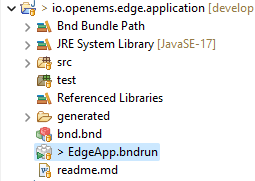
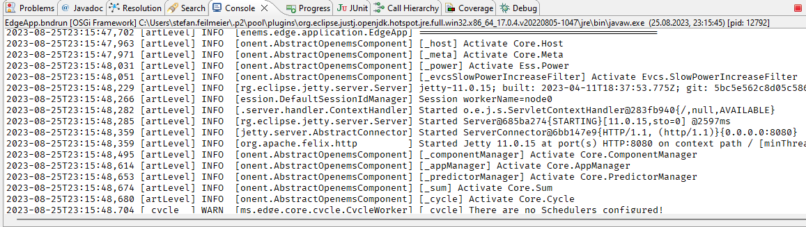
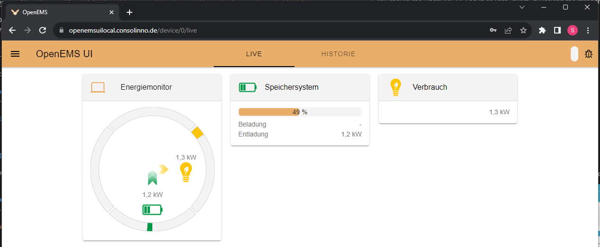
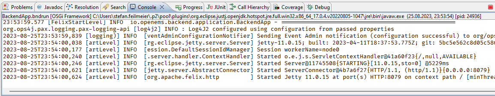
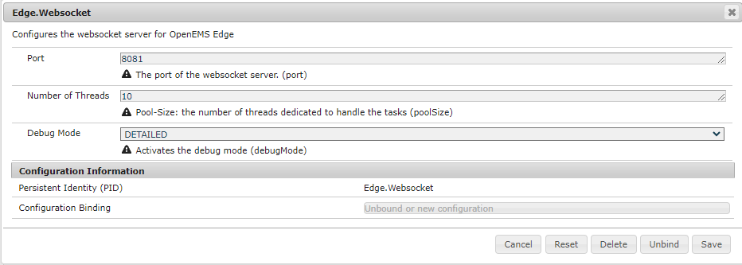
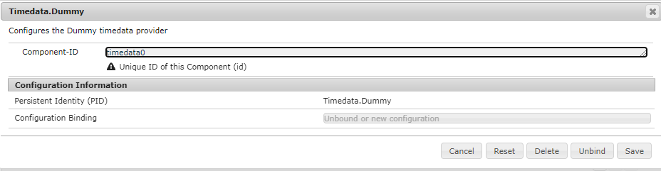

Getting Started
This quick 'Getting Started' guide should help you setup a complete development environment. Once finished you will have a working instance of OpenEMS Edge, with simulated energy storage and photovoltaic system, as well as an OpenEMS UI for monitoring the simulator inside your web browser. Finally OpenEMS Backend is added to simulate a cloud backend that connects UI and Edge.
1. Download the source code
-
Download any git client and install it. Our recommendation is Sourcetree by Atlassian
-
Clone the OpenEMS git repository
-
In Sourcetree:
-
press File → Clone
-
enter the git repository path
https://github.com/OpenEMS/openems.git -
select a target directory, for example
C:\Users\your.user\git\openems -
and press Clone.
 Figure 1. Cloning the git repository using Sourcetree
Figure 1. Cloning the git repository using Sourcetree
-
-
Alternatively: with the git command line utility
-
open a console
-
change to the target directory
-
execute
git clone https://github.com/OpenEMS/openems.git
-
-
-
Git is downloading the complete source code for you.
| OpenEMS uses the git version control system via the popular GitHub platform. It’s worth learning some basic git commands and workflows. If you want to start with your own OpenEMS developments, just create a copy using the GitHub fork a repo feature, and create a pull request to get feedback on your work and contribute to the project. |
2. Setup Eclipse IDE for OpenEMS Edge and Backend
| Eclipse IDE is the recommended development environment for newcomers to OpenEMS. If you are more familiar with IntelliJ IDEA, feel free to use it. Follow this guide. |
-
Prepare Eclipse IDE
-
Download Java Development Kit (JDK) 17 and install it. We recommend the OpenJDK Temurin builds by the Adoptium project
-
Download Eclipse for Java , install and start it
-
On first start you will get asked to create a workspace. Select your source code directory (
C:\Users\your.user\git\openemsin our example) and press Launch. Figure 2. Creating a workspace in Eclipse IDE
Figure 2. Creating a workspace in Eclipse IDE -
Install BndTools in Eclipse:
Menu: Help → Eclipse Marketplace… → Find: → enter Bndtools → press Install
-
Configure Eclipse IDE to use JDK 17.
-
In the Menu select Windows → Preferences
-
Select Java - Installed JREs in the navigation tree
-
Press the Add… button
-
Keep Standard VM selected and press Next >
-
Press the Directory… button and select the folder of the installed JDK (e.g.
C:\Program Files\Eclipse Adoptium\jdk-17.0.7.7-hotspot) -
Press the Finish button
-
Back in the Preferences window, tick the newly added JDK 17 and press Apply and Close
Figure 3. Creating a workspace in Eclipse IDE
-
-
-
Import OpenEMS component projects (OSGi bundles):
Menu: File → Import… → Bndtools → Existing Bnd Workspace → your source code directory should have been selected as Root Directory automatically → Finish → "Switch to Bndtools perspective?" Yes
-
Eclipse will now spend some time importing and building OpenEMS Edge and Backend. Close the Welcome window to follow the progress till you eventually see the full tree of OpenEMS projects (or bundles) in the Bndtools Explorer and all errors and warnings in the Problems tab disappear.
3. Run OpenEMS Edge and start Simulator
-
Run OpenEMS Edge
-
In Eclipse IDE open the project io.openems.edge.application and double click on EdgeApp.bndrun.
Figure 4. io.openems.edge.application project in Eclipse IDEInstead of navigating through the projects tree, you can simply use the keyboard shortcut Ctrl + Shift + R to start the "Open Resource" dialog. Enter "EdgeApp.bndrun" there and press Enter to open the file. The
EdgeApp.bndrunfile declares all the bundles and runtime properties. For now it should not be necessary to edit it, but it hides some useful settings unter the Source tab:-
org.osgi.service.http.port=8080: start the Apache Felix Web Console on port8080 -
felix.cm.dir=c:/openems/config: persist configurations in the folderc:/openems/config. Adjust this if you are working on Linux to keep your configurations after restart -
openems.data.dir=c:/openems/data: this is where bundles are allowed to persist data. It is used e.g. by the RRD4j timedata storage
-
-
Click on Run OSGi to run OpenEMS Edge. You should see log outputs in the Console tab inside Eclipse IDE.
Figure 5. OpenEMS Edge initial log output
-
-
Configure and start the Simulator
-
Open the Apache Felix Web Console Configuration
Login with username admin and password admin.
 Figure 6. Apache Felix Web Console Configuration
Figure 6. Apache Felix Web Console Configuration -
Configure a Scheduler
The Scheduler is responsible for executing the control algorithms (Controllers) in order and defines the OpenEMS Edge application cycle -
Click on Scheduler All Alphabetically
 Figure 7. Configuration of All Alphabetically Scheduler
Figure 7. Configuration of All Alphabetically Scheduler -
Accept the default values and click Save
-
You created your first instance of an OpenEMS Component with ID "scheduler0". The log shows:
INFO [onent.AbstractOpenemsComponent] [scheduler0] Activate Scheduler.AllAlphabeticallyAdd any other OpenEMS Components in the same way.
Once everything is setup you can configure Components more easily via OpenEMS UI using the "Install components" feature in the Settings.
-
-
Configure debug outputs on the console: Controller Debug Log. The default values can be accepted without changes.
 Figure 8. Configuration of Controller Debug Log
Figure 8. Configuration of Controller Debug LogThe log shows:
INFO [onent.AbstractOpenemsComponent] [ctrlDebugLog0] Activate Controller.Debug.Logfollowed once per second by
INFO [ntroller.debuglog.DebugLogImpl] [ctrlDebugLog0] _sum[State:Ok]It is 'once per second', because the Cycle-Time is defined as "1000 ms" by default. Adjust the setting in the Core Cycle (Core.Cycle) component to change this. -
Configure a simulated standard-load-profile datasource using Simulator DataSource: CSV Predefined. Select
H0_HOUSEHOLD_SUMMER_WEEKDAY_STANDARD_LOAD_PROFILEas theSource. Figure 9. Configuration of Simulator DataSource: CSV Predefined as standard load profile datasource
Figure 9. Configuration of Simulator DataSource: CSV Predefined as standard load profile datasourceThe log shows:
INFO [onent.AbstractOpenemsComponent] [datasource0] Activate Simulator.Datasource.CSV.PredefinedThe data source was configured with the OpenEMS Component ID datasource0which will be used in the next step as theDatasource-IDreference. -
Configure a simulated grid meter: Simulator GridMeter Acting. Configure the
Datasource-ID 'datasource0'to refer to the data source configured above. Figure 10. Configuration of Simulator GridMeter Acting
Figure 10. Configuration of Simulator GridMeter ActingThis time some more logs will appear. Most importantly they show, that the Grid meter now measures (simulates) a power value and the Consumption is derived directly from this value, because no PV system or energy storage system is configured yet.
INFO [onent.AbstractOpenemsComponent] [meter0] Activate Simulator.GridMeter.Acting INFO [onent.AbstractOpenemsComponent] [meter0] Deactivate Simulator.GridMeter.Acting INFO [onent.AbstractOpenemsComponent] [meter0] Activate Simulator.GridMeter.Acting INFO [ntroller.debuglog.DebugLogImpl] [ctrlDebugLog0] _sum[State:Ok Grid:1336 W Consumption:1336 W] meter0[1336 W]This setup causes the simulated grid-meter to take the standardized load-profiles data as input parameter. 'Acting' in the name 'Simulator GridMeter Acting' refers to the fact, that this meter actively provides data - in opposite to a 'Reacting' simulated device that is reacting on other components: for example the 'Simulator.EssSymmetric.Reacting' configured below. -
Configure a simulated reacting energy storage system: Simulator EssSymmetric Reacting. The default values can be accepted without changes.
 Figure 11. Configuration of Simulator EssSymmetric Reacting
Figure 11. Configuration of Simulator EssSymmetric ReactingThe log shows:
INFO [onent.AbstractOpenemsComponent] [ess0] Activate Simulator.EssSymmetric.Reacting INFO [ntroller.debuglog.DebugLogImpl] [ctrlDebugLog0] _sum[State:Ok Ess SoC:50 % Grid:1560 W Consumption:1560 W] ess0[SoC:50 %|L:UNDEFINED] meter0[1560 W] INFO [ntroller.debuglog.DebugLogImpl] [ctrlDebugLog0] _sum[State:Ok Ess SoC:50 %|L:0 W Grid:1502 W Consumption:1502 W] ess0[SoC:50 %|L:0 W] meter0[1502 W]The debug log now shows data for the battery, but the charge/discharge power stays at "0 W" and the state of charge stays at "50 %" as configured. Next step is to configure a control algorithm that tells the battery to charge or discharge depending on the power measured by the simulated grid meter. -
Configure the self-consumption optimization algorithm: Controller Ess Balancing. Configure the
Ess-ID'ess0'andGrid-Meter-ID'meter0'to refer to the components configured above. Figure 12. Configuration of Controller Ess Balancing
Figure 12. Configuration of Controller Ess BalancingThe log shows:
INFO [onent.AbstractOpenemsComponent] [ctrlBalancing0] Activate Controller.Symmetric.Balancing ... INFO [ntroller.debuglog.DebugLogImpl] [ctrlDebugLog0] _sum[State:Ok Ess SoC:50 %|L:593 W Grid:15 W Consumption:608 W] ess0[SoC:49 %|L:593 W|DebugSetActivePower:593 W] meter0[15 W]Values will differ slightly for you, but note how the Controller now tells the battery to discharge ( Ess SoC:49 %|L:593 W), trying to balance the Grid power to "0 W" (Grid L:15 W): -
Configure the websocket Api Controller: Controller Api Websocket. The default values can be accepted without changes.
 Figure 13. Configuration of Controller Api Websocket
Figure 13. Configuration of Controller Api WebsocketThe log shows:
INFO [onent.AbstractOpenemsComponent] [ctrlApiWebsocket0] Activate Controller.Api.Websocket INFO [socket.AbstractWebsocketServer] Starting [Websocket Api] websocket server [port=8085]The Controller Api Websocket is required so that OpenEMS UI can connect to OpenEMS Edge locally.
-
4. Run OpenEMS UI
| If you plan to actively develop on OpenEMS UI, you can now also setup a development environment for it using this guide. Otherwise just go ahead with the hosted version: |
-
Make sure OpenEMS Edge is running locally and the websocket is running on port
8085. -
You should see OpenEMS UI. Log in as user "guest" by leaving the standard password and clicking the login button. Alternatively type "admin" in the password field to log in with extended permissions.
 Figure 14. OpenEMS UI Login screen
Figure 14. OpenEMS UI Login screen -
You should see the Energymonitor showing the same data as the DebugLog output on the console.
Figure 15. OpenEMS UI Energymonitor screen
Unfortunately the hosted version of OpenEMS UI is currently slightly outdated and incompatble with latest OpenEMS Edge. Follow the OpenEMS UI guide to produce the following visualization. The language can be changed in the "burger menu" on top left → admin → Allgemeine Einstellungen.
5. Integrate OpenEMS Backend
Instead of having Edge and UI talk to each other directly, the communication can also be proxied via Backend.
5.1. Run and configure OpenEMS Backend
-
In Eclipse IDE open the project io.openems.backend.application and double click on BackendApp.bndrun.
 Figure 17. io.openems.backend.application project in Eclipse IDE
Figure 17. io.openems.backend.application project in Eclipse IDE -
Click on Run OSGi to run OpenEMS Backend. You should see log outputs on the console inside Eclipse IDE.
Figure 18. OpenEMS Backend initial log outputDisable the two icon buttons "Show Console When Standard Out changes" and "Show Console When Standard Error changes" next to the Console tab to avoid constant switching between the output of OpenEMS Edge and OpenEMS Backend. -
Configure the Backend
-
Open the Apache Felix Web Console Configuration .
Apache Felix Web Console for OpenEMS Backend is started on port 8079 by default. This is configured using the org.osgi.service.http.portsetting in BackendApp.bndrun.Login with username admin and password admin.
-
Configure Edge.Websocket
The Edge.Websocket service is responsible for the communication between OpenEMS Backend and OpenEMS Edge. In the example we are configuring the
Port '8081'. This port needs to match with what we configure later in OpenEMS Edge. TheDebug Mode 'DETAILED'setting helps us to get some more details on the internal behaviour.Figure 19. Configuration of Backend Edge.Websocket -
Configure Ui.Websocket
The Ui.Websocket service is responsible for the communication between OpenEMS Backend and OpenEMS UI. In the example we are configuring the
Port '8082'. This port needs to match with what we configure later in the OpenEMS UI environment file. We are again settingDebug Mode 'DETAILED' Figure 20. Configuration of Backend Ui.Websocket
Figure 20. Configuration of Backend Ui.Websocket -
Configure Timedata
The Timedata service provider is responsible for holding the current and historic data of each connected Edge device. In the example we are configuring the Timedata.Dummy service. The default value for _Component-ID` can be accepted without changes, so just press Save. In a production system you would want to use a real implementation like Timedata.InfluxDB.
Figure 21. Configuration of Backend Timedata.Dummy -
Configure Metadata
The Metadata service provider is responsible for authentication of Edge devices and Users connecting via UI.  Figure 22. Configuration of Backend Metadata.Dummy
Figure 22. Configuration of Backend Metadata.DummyIn the example we are configuring the Metadata.Dummy service. It takes no configuration parameters, so just press Save. In a production system you would want to use a real implementation like Metadata.File, which uses a static JSON file as input, or Metadata.Odoo, which uses the Odoo business software for authentication and IoT device management. This will require the Odoo-OpenEMS-Addon to be installed on your Odoo instance. See the OpenEMS Live-Demo Gitpod workspace for a full, production ready example configuration. For more information see → Gitpod Workspace -
Backend is ready
You should have seen some important log messages by now, that indicate that the OpenEMS Backend is ready to accept connections:
-
INFO [d.timedata.dummy.TimedataDummy] [Timedata.Dummy] Activate
INFO [d.metadata.dummy.MetadataDummy] [Metadata.Dummy] Activate
INFO [socket.AbstractWebsocketServer] [Ui.Websocket] Starting websocket server [port=8082]
INFO [socket.AbstractWebsocketServer] [Edge.Websocket] Starting websocket server [port=8081]5.2. Configure OpenEMS Edge
Next we will configure OpenEMS Edge to connect to the OpenEMS Backend Edge.Websocket service.
-
Switch back to the Apache Felix Web Console Configuration for OpenEMS Edge .
-
Configure the Controller Api Backend Component. The default values can be accepted without changes right now.
 Figure 23. Configuration of Controller Api Backend
Figure 23. Configuration of Controller Api BackendSome configuration parameters are still noteworthy here:
-
Apikey is used to authenticate this Edge at the Backend Metadata service. It has to be unique for each Edge.
-
Uri is set to
ws://localhost:8081. This defines an unencrypted websocket (ws://) connection to the local computer on port8081like we configured before for the Edge.Websocket. For a production setup you would want to use a TLS encrypted websocket with awss://uri.Once you press save you should see logs in OpenEMS Edge
INFO [onent.AbstractOpenemsComponent] [ctrlBackend0] Activate Controller.Api.Backend INFO [socket.AbstractWebsocketClient] [ctrlBackend0] Opening connection to websocket server [ws://localhost:8081] INFO [socket.ClientReconnectorWorker] [ctrlBackend0] Connecting WebSocket... [NOT_YET_CONNECTED] INFO [socket.ClientReconnectorWorker] [ctrlBackend0] Connected WebSocket successfully [0s] INFO [.controller.api.backend.OnOpen] [ctrlBackend0] Connected to OpenEMS Backendand OpenEMS Backend
INFO [s.backend.common.metadata.Edge] Edge [edge0]: Update version from [0.0.0] to [...] INFO [mon.metadata.SimpleEdgeHandler] Edge [edge0]. Update config: ... INFO [dgewebsocket.EdgeWebsocketImpl] [monitor] Edge-Connections: 1
-
5.3. Connect OpenEMS UI with Backend
(You need to have completed the OpenEMS UI guide for the following steps)
-
In the Visual Studio Code terminal stop the running
ng serve…by pressing ctrl + c -
Restart OpenEMS UI in 'local backend mode':
ng serve -c openems-backend-dev
OpenEMS UI can work both for local connections to OpenEMS Edge as well as cloud connections to OpenEMS Backend. The switch requires some basic parameters that are defined in 'environment' files ui/src/themes/openems/environments. The possible parameters for ng serve -c… are defined in the ui/angular.json file.
|
-
Open a browser at http://localhost:4200
-
You should see OpenEMS UI Login. Log in with any email / username and password.
Metadata.Dummy accepts any user/password combination. For production use, switch to a different Metadata implementation as described above. Figure 24. OpenEMS UI Login screen -
You will be presented an overview list of all connected OpenEMS Edge devices you have permissions for:
Figure 25. OpenEMS UI Overview screen -
Click on OpenEMS Edge #0 to see the same live-view as before on the local connection.
Figure 26. OpenEMS UI Live screen
6. Next steps
Now that you setup a complete development environment and have a working instance of OpenEMS Edge, OpenEMS Backend an OpenEMS UI, you can continue implementing your first device driver in OpenEMS. We provide a tutorial that explains the steps to implement an electric meter in OpenEMS Edge that is connected via Modbus/TCP.
The meter itself is simulated using a small Modbus slave application, so no external hardware is required for this guide. → Implementing a Device
7. Help
If you experienced any problems or doubts, please get in touch with us on the OpenEMS Community forum.